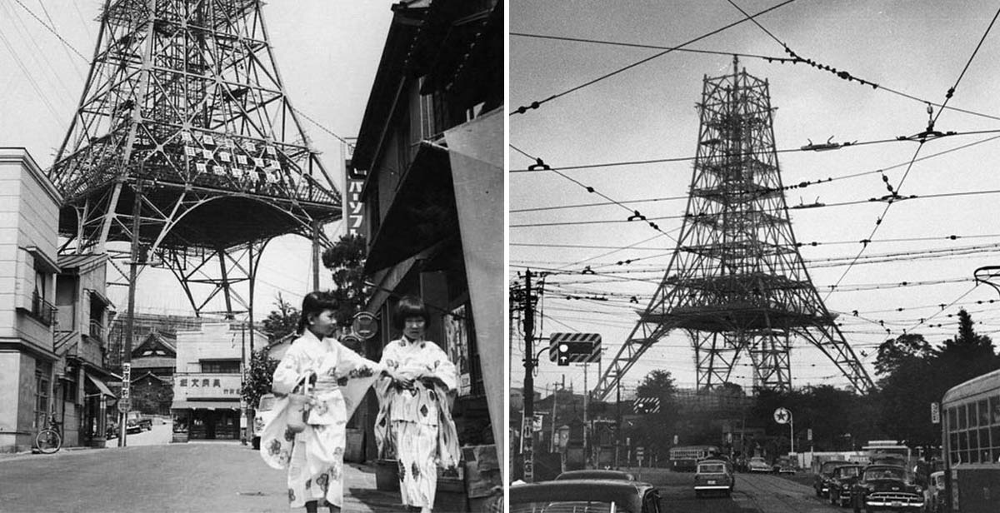

De l’occupation américaine (1945-1952) au Miracle Economique (1952-1985) jusqu’à la décennie perdue (1991-2001/10) Passé d’Empire du Japon à Etat du Japon, le pays traverse une période de grande dépression. Le but des USA est de faire appliquer le traité de Postdam par le Japon. Ce dernier souffre de mauvaises récoltes qui engendreront des famines, des millions de civils se retrouvent sans logement et sont déplacés, plusieurs villes sont en ruines, etc. En plus de destituer l’empereur de sa nature divine, la constitution est elle aussi réécrite. L’armée japonaise devient une armée de défense autorisée à ne prendre part dans les conflits internationaux que pour des missions de police et de reconstruction. Ces dernières années, le premier ministre Abe Shinzo a voulu modifier cette clause de la constitution soulevant d’extraordinaires mouvements de foule d’opposition. Les terres sont rachetées aux riches propriétaires et revendues à bas prix pour des fermiers relançant l’agriculture.
L’Amérique rendra son pouvoir au Japon en Septembre 1951 mais signera avec elle un pacte de défense : l’Amérique protège le Japon militairement, le Japon surveille le pacifique créant un premier écran entre la Russie et les USA. Des troupes Américaines sont d’ailleurs laissées en service sur les îles d’Okinawa (et toujours à ce jour). Le Japon se jette alors dans la production industrielle de masse que lui ont transmise les USA. Forts d’un respect de la hiérarchie et d’une main d’œuvre mixte, les USA ayant préparé le terrain avec des lois sur le travail encourageant l’emploi des femmes, les résultats sont rapidement au rendez-vous. Une grande partie de cette réussite est attribué à Ikeda Hayato 池田勇人 le premier ministre de l’époque que certains nomment aussi l’architecte du Miracle Economique Japonais. Après s’être concentré sur la production des matières premières, le Japon se tourne vers les technologies de pointe à la suite de la première crise pétrolière de 1973. Cependant, en 1985 l’Accord de Plaza va faire éclore la bulle financière du Japon. Cette bulle éclatera en 1992 et entraînera avec elle la décennie perdue.